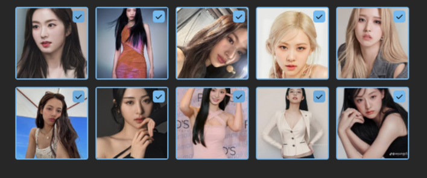
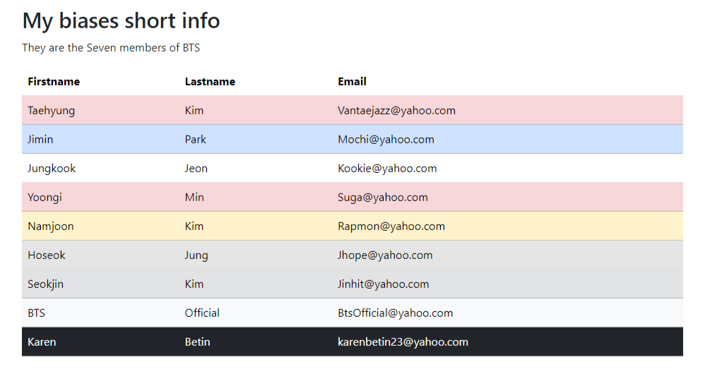

Hi, I am Karen Betin.
A simple developer.
As a Computer Science student, I have learned somthe importance of effective assessment practices in programming. Throughout this course, I have developed a deeper understanding of the role of assessment in promoting learning and improving student outcomes. I have also learned how to design and implement various assessmentmethods, including formative andsummative assessments, as well as how toanalyze and use assessment data to informinstructional decisions.
Projects
Project 1
JUMBOTRON
In this project, I am able to create a simple image gallery containing beautiful faces in Korea.
- HTML
Project 2
GRID TABLE
In this project, I am able to create my biases short info, their whole names and their email.
- HTML
Skills
- HTML
- CSS
- Python